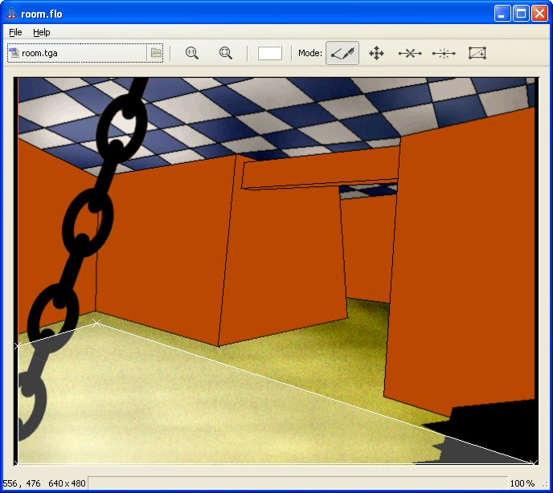

A SLUDGE floor plan is a group of convex polygons which may, or may not, be joined together. If one polygon is joined to another by a line (i.e. they share two vertices) characters can walk from one polygon to the other by crossing the shared line. Note that SLUDGE does not support characters crossing from one polygon to another where they meet at a point (i.e. they share only one vertex).
To define the walkable area(s) for a scene, use the SLUDGE Floor Maker.
On Mac, there's a "new floor" entry in the Tools menu of the Development Kit.
On other platforms, the Floor Maker is a separate program. First make sure that there's no floor in memory already by choosing New from the File menu (you do not need to do this if you've only just started the program, unless you started it by double-clicking an existing floor file).
Now, load the main image for the scene by pressing the file selection button in the toolbar (labelled Load backdrop on Mac).
Work out in your head where you want characters to be able to walk. Characters should not be able to walk up to the very edges of the actual floor... instead, make the edge of the walkable area roughly one footstep away from any walls or obstacles which appear in the image. Confused? This is how one of of the floors of the verb coin example looks:

Now, start putting the floor onto the screen. The boundary of a floor is made up of straight lines between corners (vertices, as they're called in the program). Click to enter the "Define floor borders" mode. Click on the screen (Mac: Hold down Command and click) where you want to add a vertex. When you're done, click the first vertex again to complete the walkable area.
If the floor is a concave shape (it has at least one corner which pokes in rather
than sticks out) you'll need to split it into two or more convex shapes (which only
contain vertices which point outwards). Push  (Split floor), click and hold the left mouse button (Mac: Command-click) while
pointing at one of the inwardly-pointing vertices... now drag the line so that
it ends at another vertex. A line will be added, splitting the appropriate segment
of floor into two.
(Split floor), click and hold the left mouse button (Mac: Command-click) while
pointing at one of the inwardly-pointing vertices... now drag the line so that
it ends at another vertex. A line will be added, splitting the appropriate segment
of floor into two.
(The reason for this is that if a character is told to walk from one point to another, and both points are within the same section, the engine assumes the character can move in a straight line. This is the main principle behind the path-finding method used in SLUDGE.)
If you want to change a floor using the floor maker, make sure it's loaded and select the appropriate mode. The modes are as follows:
Define floor borders: Already discussed above. If you want to add a section of floor outside of what's already been defined, you can use this mode to add a new polygon. If you want to create a floor plan with holes (for example, so that characters can walk around both sides of pillars) you must use this method.
Move vertices: Drag the mouse (Mac: hold down Command and drag) to move a vertex to a new location. Vertices can even be dragged onto other, already existing vertices.
Delete vertex: Click (Mac: Command-click) on a vertex and it will be removed. (Once a polygon has too few vertices it is removed.)
Split line: Drag the mouse (Mac: hold down Command and drag) from one end to the other of an existing line. A new vertex will be created halfway along the selected line.
Split floor: Drag the mouse (Mac:
hold Command and drag) to create a line which splits one segment into two.
Use this in order to make sure the floor is only made up of convex polygons.
The line must start and end at vertices which are present in the same segment.
Windows and Linux: If your scene is larger than the SLUDGE floor maker window, you can scroll around the image by holding down the right mouse button and dragging the mouse in the direction in which you wish to move.
Mac: Click and drag to scroll the scene. You can also zoom in and out with two-finger scrolling.
If your scene has colours that make it difficult to see the floor plan, change the colour the floor plan is drawn in using the colour chooser button in the toolbar.
To save your work, choose Save or Save as... from the File menu. Choosing Save will store your floor in the same file from which it was loaded, or to which it was saved last. (This filename is shown in the title bar of the window.) Choosing Save as... lets you select a new filename.
To load an existing floor, choose Open from the File menu. Alternatively, double-click on the floor file and the Floor Maker will start and load the file automatically.
To load a floor, use the setFloor command. From that moment onwards, characters told to move by use of the moveCharacter command will (a) only move to within your defined floor plan and (b) if starting within the floor plan never leave it, automatically walking around obstacles and furniture. (Characters can still be moved to points off the floor by the forceCharacter command.)
SLUDGE and this SLUDGE documentation are copyright Hungry Software and contributors 2000-2012